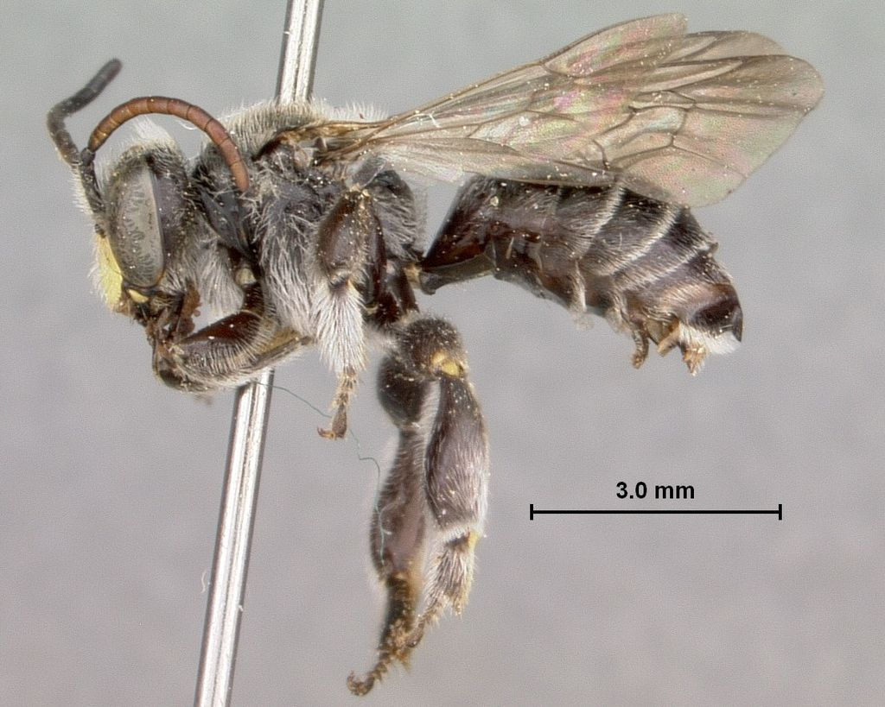
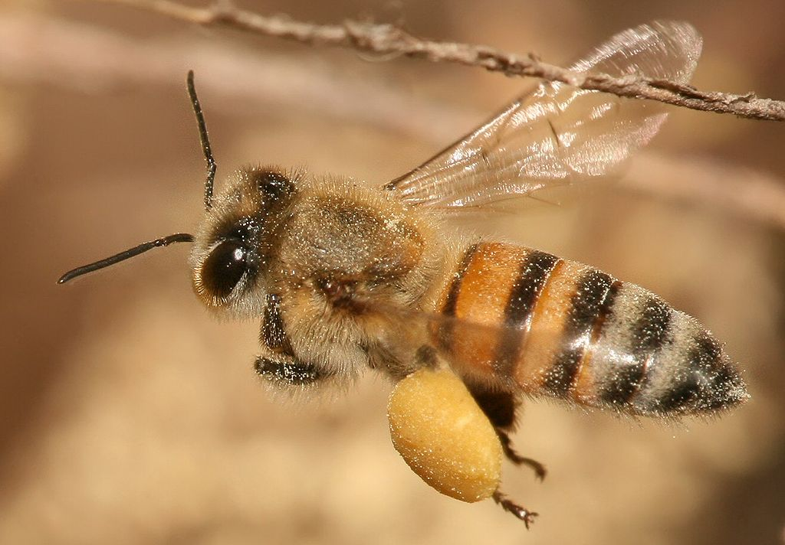
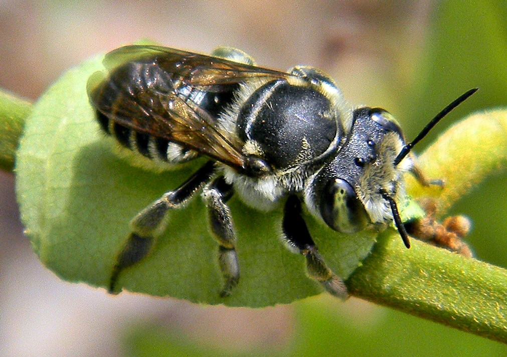
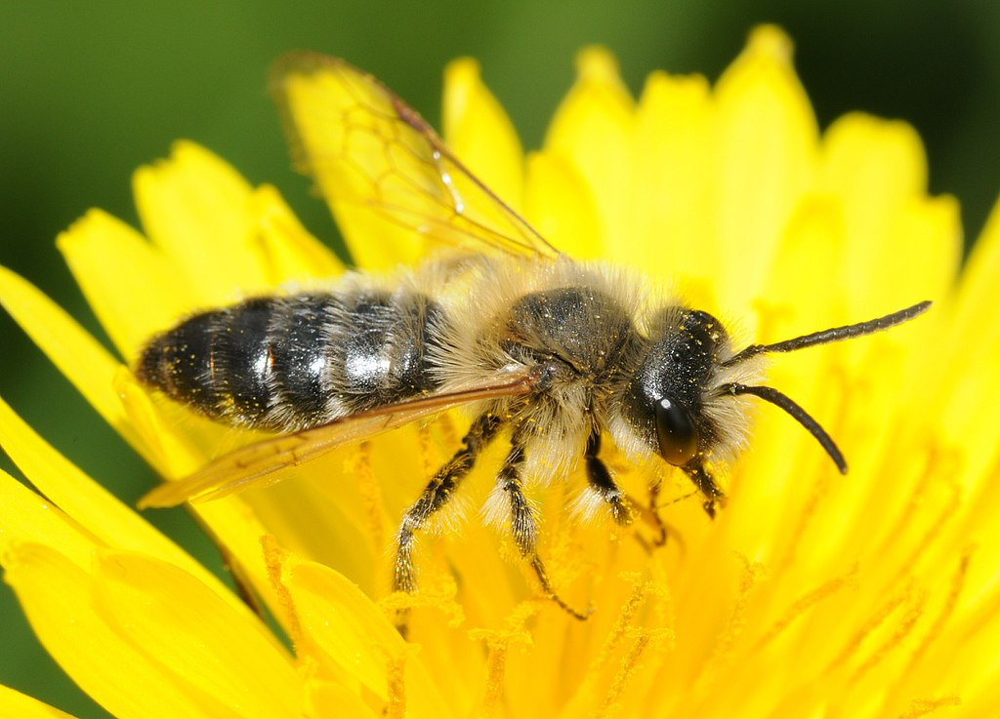
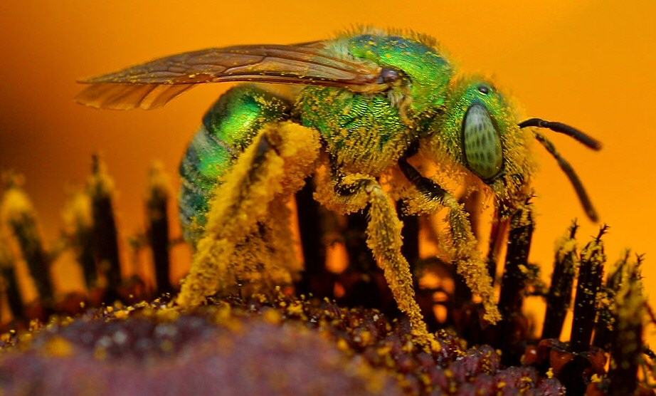

Пчела́. В общеславянском варианте это слово имело форму бьчела и было образовано от того же корня, что и сохранившийся в диалектах глагол бучать — «жужжать». К той же основе восходит и существительное букашка. Название свое это насекомое получило по жужжанию, которое оно производит в полете.
Пчёлы имеют длинный хоботок, которым они пользуются для высасывания пыльцы растений. У них также имеются усики (или антенны, сяжки), каждый из которых состоит из 13 сегментов у самцов и 12 сегментов у самок. Все пчёлы имеют две пары крыльев, задняя пара по размеру меньше передней; только у нескольких видов у одного пола или касты крылья очень короткие, что делает полёт пчелы трудным или невозможным делом.
Опыление пчёлы производят посредством перенесения пыльцы с одного расцветающего растения на иное. Такая малозаметная деятельность играет огромную роль в аграрной промышленности. Совершая один полёт, она опыляет более 150 видов, включая плодово ягодные, зерновые, и лекарственные культуры. Такие незначительные моменты являются ключевым фактором репродуктивности сортов и благотворной наследственности, которая закладывается во время осуществления данного действия. Перелетая с одного цветка на другой, они собирают нектар, который жизненно важен для их потомства, перенося при этом пыльцу на лапках и опыляя всевозможные растения. Такой взаимосвязанный круговорот процессов влияет на жизнедеятельность многих организмов, что напрямую связано с количеством кислорода в атмосфере и накоплением полезных веществ в живых клетках.
У пчёл хорошо развито цветовое зрение (гораздо лучше, чем у других насекомых). Так, они различают следующие цвета (также различаемые человеком): синий, жёлтый, оранжевый, зелёный, белый. Пчёлы не различают красный цвет. Помимо этого пчёлы обладают способностью различать поляризованный свет (почти так же хорошо, как цвет или яркость), испускаемый, например, голубым небом.
Злейшим врагом пчел является восковая моль. Она поселяется в слабые пчелиные семьи весной. Самки моли откладывают яйца, из которых выходят затем личинки. Они проникают в соты, делают в них ходы, обтягивают соты паутиной, из-за чего пчелиная матка не может откладывать в них яйца и даже гибнет, а пчелы не могут кормить расплод. В результате семья слабеет, вынуждена покинуть улей и поселиться в другом месте.
Встречаются повсеместно на всех континентах, кроме Антарктиды. В Неотропике обнаружено 5016 видов пчёл (включая 16 ископаемых), с крупнейшей фауной в Бразилии (1678 видов)
Бесплатная доставка в Нижний Новгород, Арзамас, Починки, Лукоянов, Шатки, Дальнее Константиново, Нижегородец, Дзержинск. Дату доставки будем обговаривать. Все зависит от погодных условий для качественного формирования.
Здоровые и высокопродуктивные пчёлы и матки являются залогом успеха нашей пасеки. А сейчас оценить качества наших пчёл можете и вы!
Карпатские, среднерусские и пчёлы пород Карника и Бакфаст продуктивны, отличаются хорошей зимостойкостью и слабой ройливостью. Также предлагаем плодные матки этих пород.
В этом году заказывал пчел 16 пакетов , хоть погода была не особо шикарная но меду взял , да у нас в районе с медоносами ещё слабовато. Буду пасеку расширять, ещё возьму весной 2019. Пчелы хорошие. Мне понравилось. Ставлю пять звезд. Минусов нет.